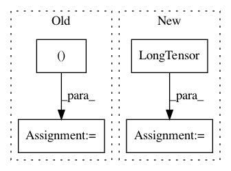

914192dda940237aaf47130e5511bb929cd776b7,torchsample/utils.py,,th_gather_nd,#Any#Any#,252
Before Change
inds = coords[:,0]*x.size(1)
for i in range(x.dim()-2):
inds += coords[:,i+1]*x.size(i+2)
inds += coords[:,-1]
x_gather = torch.index_select(th_flatten(x), 0, inds)
return x_gather
After Change
def th_gather_nd(x, coords):
inds = coords.mv(torch.LongTensor(x.stride()))
x_gather = torch.index_select(th_flatten(x), 0, inds)
return x_gather
In pattern: SUPERPATTERN
Frequency: 3
Non-data size: 4
Instances
Project Name: ncullen93/torchsample
Commit Name: 914192dda940237aaf47130e5511bb929cd776b7
Time: 2017-04-23
Author: ncullen@Nicks-MacBook-Pro.local
File Name: torchsample/utils.py
Class Name:
Method Name: th_gather_nd
Project Name: rusty1s/pytorch_geometric
Commit Name: 37847c77889e39143034af9fe0d4b92bc74e992a
Time: 2018-03-02
Author: matthias.fey@tu-dortmund.de
File Name: torch_geometric/datasets/utils/ply.py
Class Name:
Method Name: read_ply
Project Name: OpenNMT/OpenNMT-py
Commit Name: dbd4344f433498232ab26da5af3ba142f9accb51
Time: 2018-02-01
Author: s.gehrmann@outlook.com
File Name: onmt/io/TextDataset.py
Class Name: TextDataset
Method Name: collapse_copy_scores